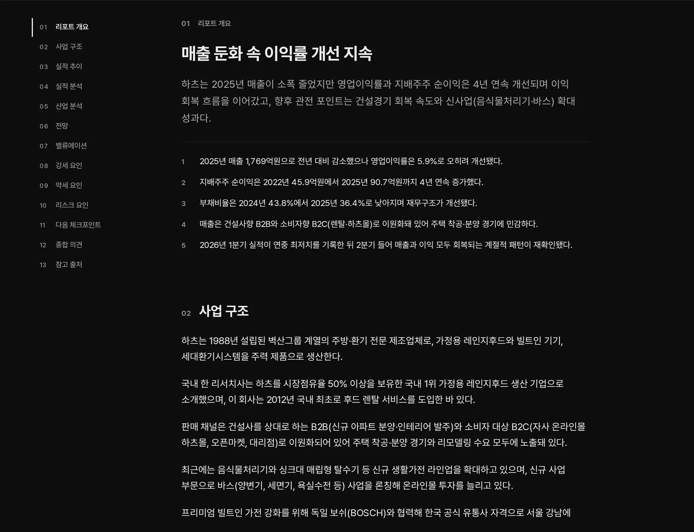
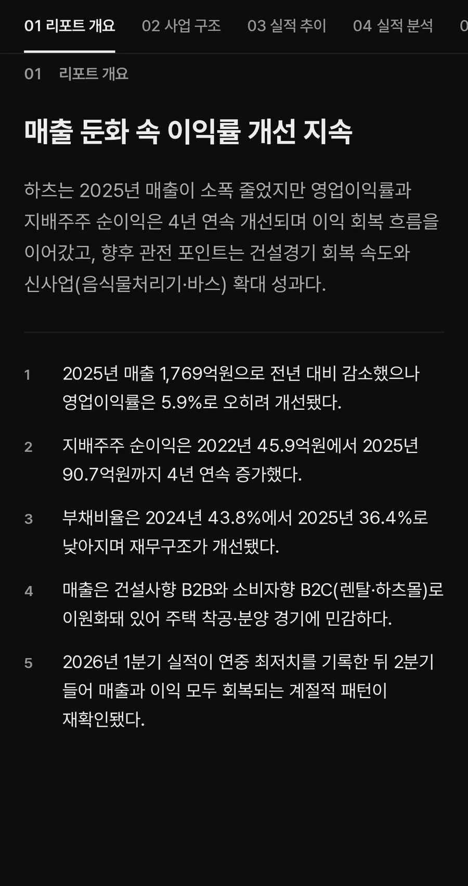
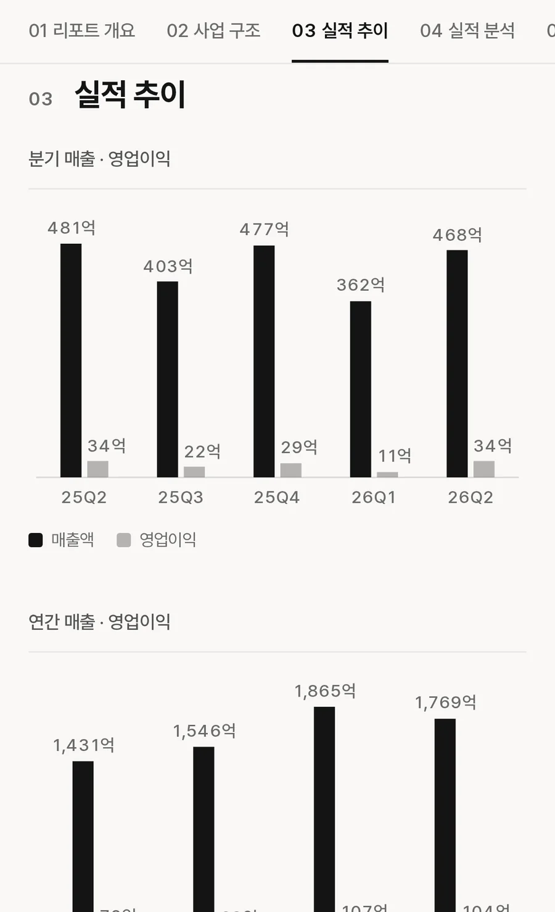
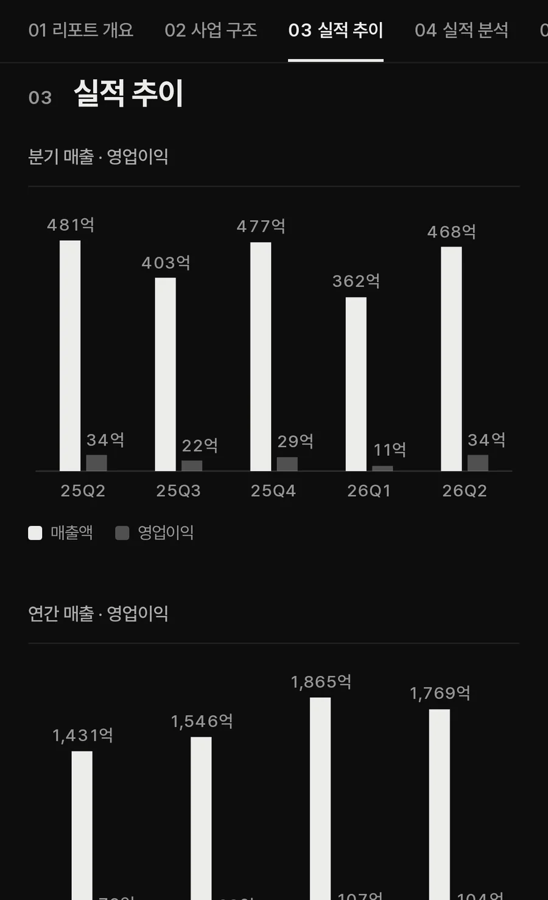
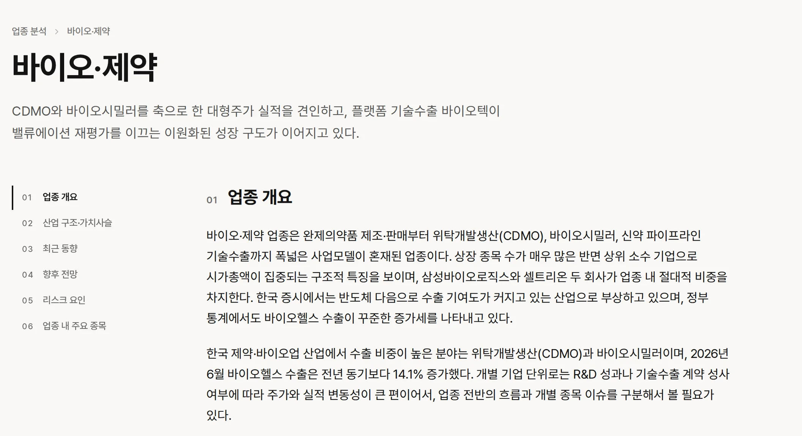
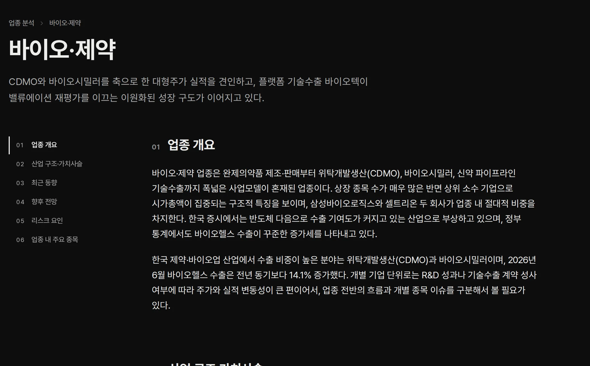
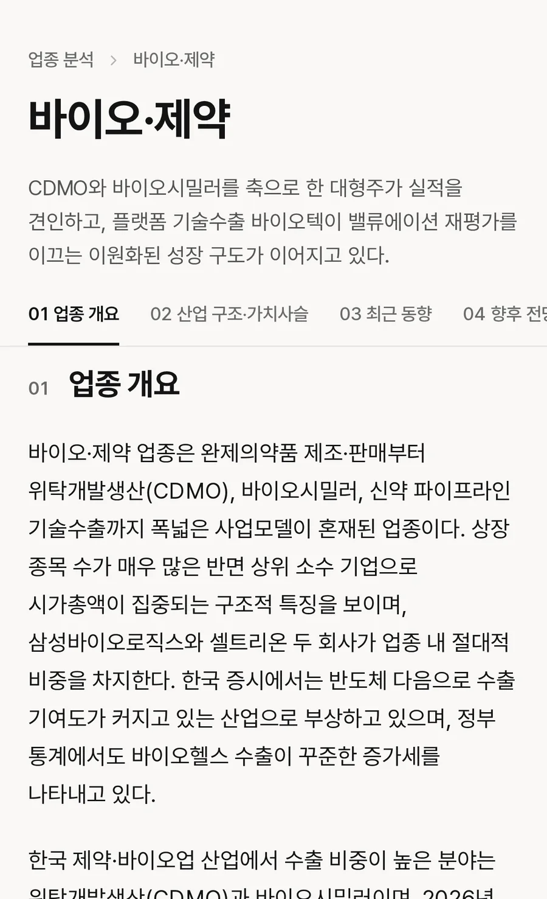
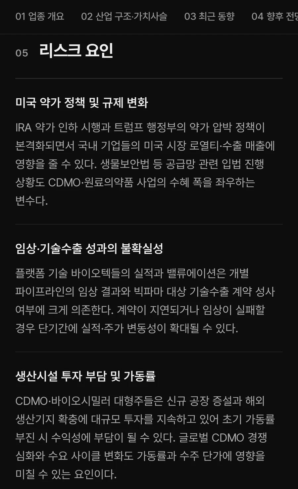

증권사 리포트가 없는
국내 상장사 58.8%
지난해 증권사 기업분석 보고서가 발간되지 않은 기업은 1,573개사입니다. KOSAI는 해당 기업에 대해서도 분석 리포트를 제공합니다.
자료: 한국IR협의회 기업리서치센터, 2025년 상장사 2,674개사 집계
리포트
한 편에 담은
기업 분석
사업 구조와 실적, 업황, 전망, 리스크를 차례로 정리합니다. 강세 요인과 약세 요인을 함께 제시해 어느 한쪽으로 치우치지 않습니다.






매수도 매도도
권하지 않습니다
KOSAI는 자체 투자의견과 목표주가를 제시하지 않습니다. 투자 판단에 필요한 사실과 근거를 정리하는 데 집중합니다.
리포트의
세 가지 원칙
공시 원본 수치
실적 표와 차트의 수치는 금융감독원 전자공시(DART) 원본에서 가져오며, AI가 생성하지 않습니다.
출처 공개
분석의 근거가 된 자료를 리포트마다 출처로 공개합니다. 한 편당 평균 17.5건입니다.
발행 전 검수
투자 권유로 읽힐 수 있는 표현은 발행 전에 자동으로 검수해 수정합니다.
공시와 함께
갱신되는 리포트
분기보고서와 반기보고서, 사업보고서가 공시되면 리포트를 새로 작성합니다. 주가와 밸류에이션 지표는 거래일마다 반영합니다.
업종 분석
30개 업종의
분석 리포트
업종마다 산업 구조와 최근 동향, 향후 전망, 리스크 요인을 분석합니다. 개별 기업을 산업 전체의 맥락에서 살펴볼 수 있습니다.
전체 업종 보기




